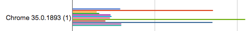

ES5 on Node
V8에서 구현된 ECMA5
Seoh
TOC
- History
- Browser Support
- And so on
Getter/Setter
var obj = {
value: [],
get a() { return this.value.join(', ') },
set a(value) { this.value.push(value); return this; }
}
obj.a = 'a', obj.a = 'b';
console.log(obj.a); // a, b
| Chrome |
IE |
Firefox(Gecko) |
Opera |
Safari |
| 1 |
9 |
2.0 (1.8.1) |
9.5 |
3 |
Array *
- Array.isArray
- indexOf(value)
- lastIndexOf(value)
- filter(callback)
- forEach(callback)
- every(callback)
- map(callback)
- some(callback)
- reduce(callback[, initialValue])
- reduceRight(callback[, initialValue])
Lo-Dash (tested in)
| Firefox |
Chrome |
IE |
Opera |
Safari |
| 3 |
19 |
6 |
10 |
5 |
- _.filter, _.select
- _.forEach, _.each
- _.every, _.all
- _.map, _.collect
- _.some, _.any
- _.reduce, _.foldl, _.inject
- _.reduceRight, _foldr

- odd: Underscore
- even: Lo-Dash
Array
| Function |
Chrome |
IE |
| Array.isArray |
5 |
9 |
| indexOf |
* |
9 |
| lastIndexOf |
* |
9 |
| filter |
* |
9 |
| forEach |
* |
9 |
| every |
* |
9 |
| map |
* |
9 |
| some |
* |
9 |
| reduce |
* |
9 |
| reduceRight |
* |
9 |
Date
| Function |
Chrome |
IE |
| Date.now |
5 |
9 |
| toISOString |
* |
9 |
Object
Object.create(proto, props)
Object.keys(obj)
Object.defineProperty(obj, prop, desc)
Object.defineProperties(obj, props)
Object.getOwnPropertyNames(obj)
Object.getPrototypeOf(obj)
Object.getOwnPropertyDescriptor(obj, property)
Object.preventExtensions(obj)
Object.isExtensible(obj)
Object.seal(obj)
Object.isSealed(obj)
Object.freeze(obj)
Object.isFrozen(obj)
Object Property *
- 이름: 설명(기본값)
- value: 값(undefined)
- get/set: getter/setter(undefined)
- writable: 변경가능(false)
- enumerable: for-in에서 제외, hasOwnProperty 가능(false)
- configurable: delete 가능한지(false)
Object
| Function |
Chrome |
IE |
| create |
5 |
9 |
| keys |
5 |
9 |
| defineProperty * |
5 |
9 |
| defineProperties |
5 |
9 |
| getOwnPropertyNames |
5 |
9 |
| getPrototypeOf |
5 |
9 |
| getOwnPropertyDescriptor |
5 |
9 |
| preventExtensions |
6 |
9 |
| isExtensible |
6 |
9 |
| seal |
6 |
9 |
| isSealed |
6 |
9 |
| freeze |
6 |
9 |
| isFrozen |
6 |
9 |
Object.prototype (not ES 5)
- __defineGetter__(name, callback)
- __defineSetter__(name, callback)
- __lookupGetter__(name)
- __lookupSetter__(name)
- 모든 브라우져에서 잘 동작
- 물론 IE는 11이상부터
- isPrototypeOf(obj) - ES3,5
ETC
| Function |
Chrome |
IE |
| JSON.stringify |
* |
8 |
| JSON.parse |
* |
8 |
| Function.prototype.bind |
6 |
9 |
| String.prototype.trim |
* |
9 |
| String.prototype.trimLeft* |
* |
x |
| String.prototype.trimRight* |
* |
x |